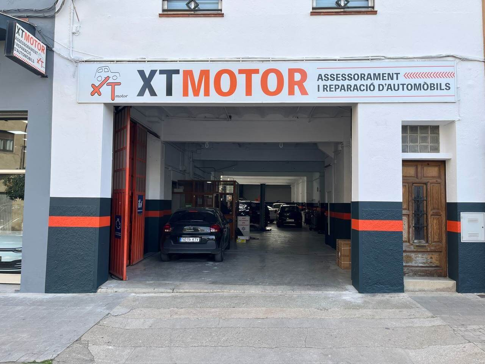
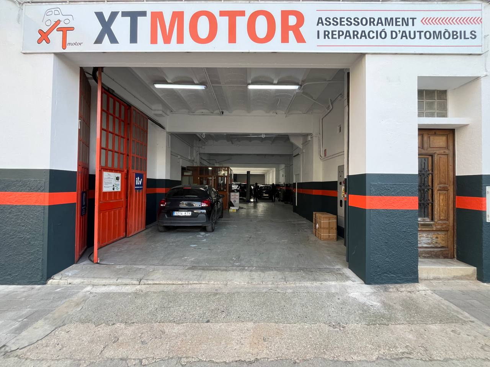

Taller mecànic a FigueresTaller mecánico en Figueres
Reparació i manteniment de cotxes i furgonetes, amb atenció personalitzada. Reparación y mantenimiento de coches y furgonetas, con atención personalizada.
Què femQué hacemos
Fem el manteniment i les reparacions habituals de cotxes i furgonetes, des d'una revisió fins a una avaria complicada. Hacemos el mantenimiento y las reparaciones habituales de coches y furgonetas, desde una revisión hasta una avería complicada.
No saps què li passa al cotxe? Truca'ns i t'orientem: ¿No sabes qué le pasa al coche? Llámanos y te orientamos: 972 503 067
-
Mecànica generalMecánica general
Reparacions de tota mena en cotxes i furgonetes.Reparaciones de todo tipo en coches y furgonetas.
-
Revisió i mantenimentRevisión y mantenimiento
Canvi d'oli i filtres i revisions periòdiques perquè el cotxe duri més.Cambio de aceite y filtros y revisiones periódicas para alargar la vida del coche.
-
PneumàticsNeumáticos
Canvi i reparació de pneumàtics de qualitat.Cambio y reparación de neumáticos de calidad.
-
FrensFrenos
Revisió i substitució de pastilles, discos i líquid de frens.Revisión y sustitución de pastillas, discos y líquido de frenos.
-
Aire condicionatAire acondicionado
Càrrega del gas i reparació de la climatització.Carga del gas y reparación de la climatización.
-
Diagnosi electrònicaDiagnóstico electrónico
Llegim les avaries de la centraleta i trobem l'origen del problema.Leemos las averías de la centralita y encontramos el origen del problema.
-
SuspensióSuspensión
Amortidors, molles i silentblocs, per anar còmode i segur.Amortiguadores, muelles y silentblocks, para ir cómodo y seguro.
-
Tub d'escapamentEscape
Reparació i substitució de l'escapament.Reparación y sustitución del escape.
Com treballemCómo trabajamos
-
Truca o passa pel tallerLlama o pásate por el taller
Explica'ns què notes al cotxe i quedem un dia per portar-lo.Cuéntanos qué notas en el coche y quedamos un día para traerlo.
-
El revisem i t'ho expliquemLo revisamos y te lo explicamos
Mirem què té i et diem què cal fer i quant costarà abans de començar.Miramos qué tiene y te decimos qué hay que hacer y cuánto costará antes de empezar.
-
El reparem i t'avisemLo reparamos y te avisamos
Quan el cotxe està a punt, et truquem perquè el vinguis a buscar.Cuando el coche está listo, te llamamos para que vengas a recogerlo.
HorariHorario
| De dilluns a divendresDe lunes a viernes | 9:00 – 13:00 15:00 – 19:00 |
|---|---|
| Dissabte i diumengeSábado y domingo | TancatCerrado |
Els festius estem tancats.Los festivos estamos cerrados.
On somDónde estamos
C/ Torras i Bages, 2617600 Figueres (Girona)
Busca la façana grisa amb la franja taronja i el rètol XTMOTOR. Busca la fachada gris con la franja naranja y el rótulo XTMOTOR.
Com arribarCómo llegar
Problemes amb el cotxe?¿Problemas con el coche?
Truca'ns i t'ajudem.Llámanos y te ayudamos.
972 503 067També ens pots escriure aTambién puedes escribirnos a xtmotor@hotmail.es